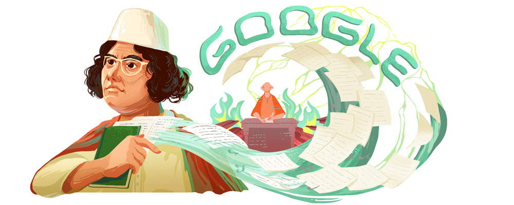
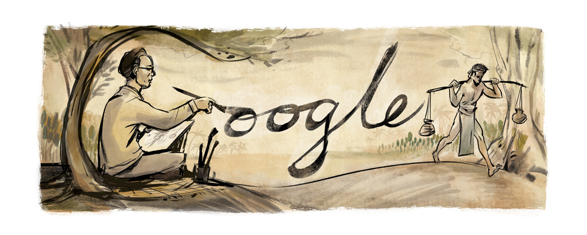
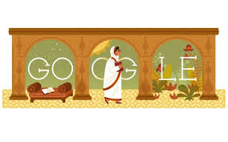
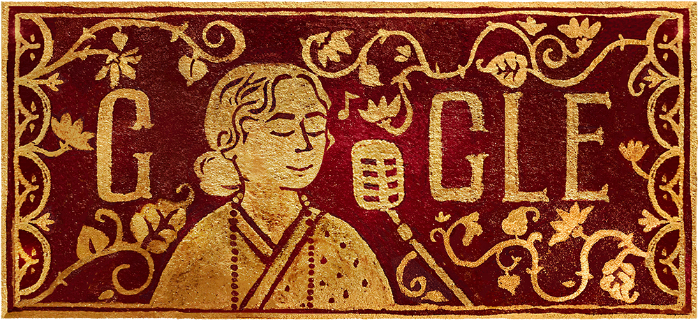
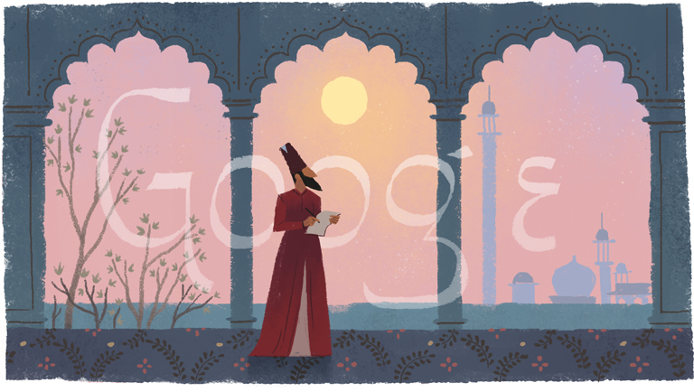
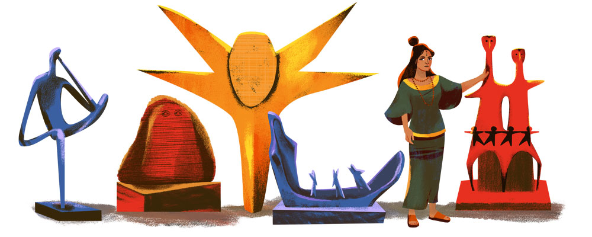
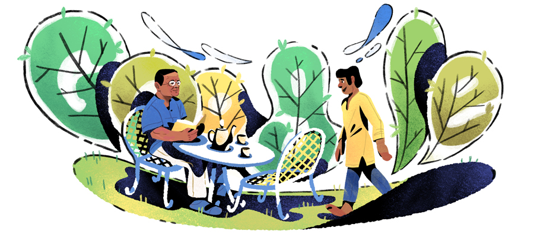
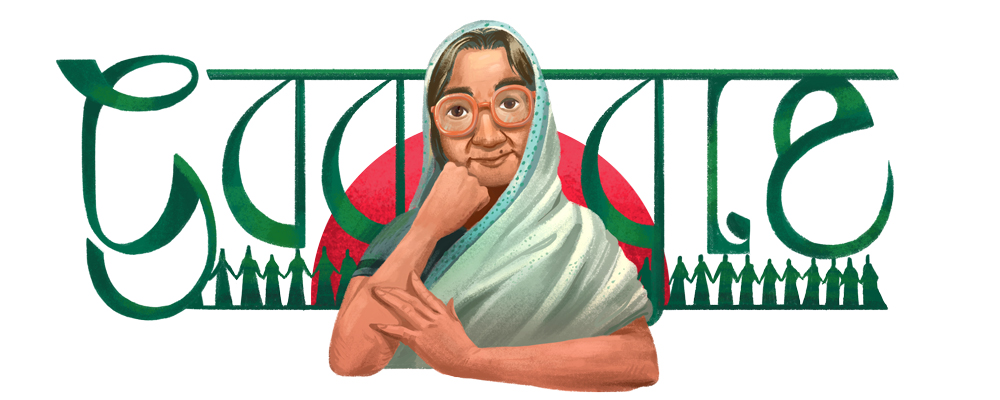
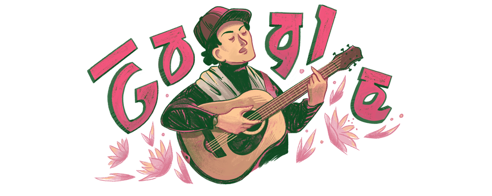
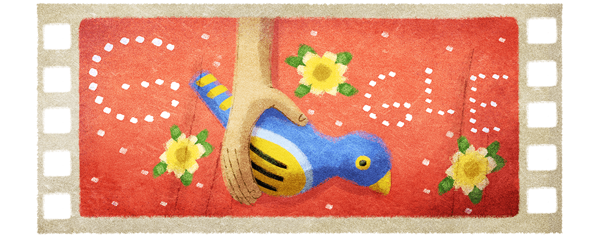

A Google Doodle is a special, temporary alteration of the logo on Google's homepages intended to commemorate holidays, events, achievements, and notable historical figures. The first Google Doodle honored the 1998 edition of the long-running annual Burning Man event in Black Rock City, Nevada, and was designed by co-founders Larry Page and Sergey Brin to notify users of their absence in case the servers crashed.Subsequent Google Doodles were designed by an outside contractor until 2001, when Page and Brin asked public relations officer Dennis Hwang to design a logo for Bastille Day. Since then, a team of employees called "Doodlers" have organized and published the Doodles.
Initially, Doodles were neither animated nor hyperlinked—they were simply images with hover text describing the subject or expressing a holiday greeting. Doodles increased in both frequency and complexity by the beginning of the 2010s. In January 2010 the first animated Doodle honored Sir Isaac Newton.The first interactive Doodle appeared shortly thereafter celebrating Pac-Man,and hyperlinks also began to be added to Doodles, usually linking to a search results page for the subject of the Doodle. By 2014, Google had published over 2,000 regional and international Doodles throughout its homepages,often featuring guest artists, musicians, and personalities.By 2019, the "Doodlers" team has created over 4,000 doodles for Google's homepages around the world.
DOODLES for Bangladesh
For Legendary Personality
1.On 25 May,2020 Goodle celebrated Bengali poet, musician, writer, and activist Kazi Nazrul Islamon his 121st birthday A prominent voice of the Indian independence movement, Nazrul was a fierce advocate for religious tolerance, freedom, and the fight against injustice, earning him the nickname “Bidrohi Kobi” (“Rebel Poet”).
Kazi Nazrul Islam was born on this day in 1899 in what is today the Bardhaman district of the Indian state of West Bengal, and as a youth, he developed an interest in poetry and literature through his involvement with his uncle’s traveling theater group. After several years in the British Indian Army during World War I, Nazrul moved to Kolkata and in 1922 published his now-famous revolutionary poem “Bidrohi” (“The Rebel”), which was marked by a vehement stance against colonialism and global oppression and inspired today’s Doodle artwork.
Nazrul’s subversive writing—much of which he published in his own magazine, Dhumketu (The Comet)—resulted in frequent imprisonment, which in turn inspired one of his most well-known works, “Rajbondir Jobanbondi'' (''The Deposition of a Political Prisoner,” 1923). He used his platform to combat bigotry in all its forms, and through his poetry supported the equality of women at a time when few of his peers were willing to do the same. Not to be confined to the written word, Nazrul also wrote some 4,000 songs, which brought him national popularity and spawned an entirely new genre called Nazrul Geeti (Music of Nazrul).
For his incredible literary contributions, Nazrul was named the national poet of Bangladesh in 1972.
2.On 29 December,2019 Goodle celebrated Bangladeshi painter, educator, and activist Zainul Abedinon his 105th birthday Widely considered a founding father of Bangladeshi modern art, he was given the title of “Shilpacharya,” or “Great Teacher of the Arts.” Throughout his colorful life, Abedin strived to preserve and honor Bangladeshi heritage.
Born along the Brahmaputra River in Mymensingh in 1914, Abedin attended the Government School of Art in Kolkata (formerly Calcutta) studying European academic styles. After completing his education, Abedin was inspired to create an art piece that paid homage to the scenic views of his childhood, which won him the Governor’s Gold Medal at age 23.
Free to craft his own style, Abedin released a series of sketches in 1943 depicting an avoidable famine that affected the region, which is widely seen as his most popular work. He would continue to draw inspiration from the human experience throughout his career, such as with Struggle (Bangla title: 'সংগ্রাম') which was painted more than 30 years after his famine sketches.
To foster Bangladeshi cultural life, Abedin created the first center for modern art in the region with the Government Institute of Arts and Crafts (now the Faculty of Fine Arts) at the University of Dhaka in 1948. A decade later, he was honored with his country’s highest civil award, the Presidential Award for Pride of Performance, for his cultural contributions.
Four years after Bangladesh gained its independence from Pakistan in 1971, Abedin opened the Folk Art Museum at Sonargaon and the Zainul Abedin Sangrahashala (a gallery of his personal collection) in Mymensingh to instill pride in native culture.
The International Astronomical Union named an impact crater on Mercury for Abedin in 2009, calling it “Abedin.”
শুভ জন্মদিন, Zainul Abedin!
3. On 9 December,2017 Google celebrated 137th birthdayof Begum Rokeya who was a pioneer in Bengali feminist thinking and writing. Born in 1880 in present-day Bangladesh, she became a persistent advocate for female education in her country, helping set a new precedent for the era.
Rokeya’s literary career spanned published essays, poems, short stories, and books, but her most well-known work is Sultana’s Dream, a science-fiction piece depicting a feminist utopia. She was one of the first Muslim women to express these progressive opinions and witty insights, championing equality in the treatment of men and women. Rokeya was a major advocate for women’s education, believing deeply that the disparity in available education for men and women was the root cause of inequality.
A few years after writing Sultana’s Dream, Rokeya established the first school for Bengali Muslim women in Calcutta, which remains a successful school for girls and women. Later she created the Muslim Women’s Association, developed to support women’s education and employment causes. Rokeya believed firmly in narrowing the gap in opportunities for men and women, and dedicated her entire life to the cause.
Happy birthday, Begum Rokeya!
4.On 28 July,2018 Google celebrated 88th Birthday of Bangladeshi singer Feroza Begum During her lifetime, Begum achieved what many in society thought unthinkable for a female - becoming professionally trained in music, achieving a level of stardom and notoriety that was previously reserved for only male musicians.
Born to a Muslim family in 1930, Begum was drawn to music almost immediately as a child. At 10 years old, she became a student of Kazi Nazrul Islam, a poet who eventually went on to be the national poet of Bangladesh. Feroza’s voice and ability to convey deep emotion played an important role in popularizing Nazrul Sangeet (the songs written and composed by Kazi Nazrul Islam) throughout the country.
Begum released her first album at the age of 12 and went on to tour the world, performing in over 300 solo shows. Beloved by many, Feroza was awarded Bangladesh’s Independence Day Award in 1979, the highest honor an individual could receive in the newly independent country.
Today’s Doodle, painted on watercolor paper with colored inks by Doodler Olivia When, depicts Begum sharing her voice with her audience, surrounded by gold patterning commonly found on her album covers.
5.On 27 December,2017 Google celebrated one of Urdu literature’s most iconic poets, Mirza Asadullah Baig Khan known in popular culture by many names, but most commonly as Ghalib(meaning conqueror).
Born in the Indian state of Uttar Pradesh, during the reign of Mughal Emperor Bahadur Shah, Ghalib showed a gift for language at an early age and was educated in Persian, Urdu, and Arabic.
His verse is characterized by a lingering sadness borne of a tumultuous and often tragic life — from being orphaned at an early age, to losing all of his seven children in their infancy, to the political upheaval that surrounded the fall of Mughal rule in India. He struggled financially, never holding a regular paying job but instead depending on patronage from royalty and more affluent friends.
But despite these hardships, Ghalib navigated his circumstances with wit, intellect, and an all-encompassing love for life. His contributions to Urdu poetry and prose were not fully appreciated in his lifetime, but his legacy has come to be widely celebrated, most particularly for his mastery of the Urdu ghazal (amatory poem).
6.On 30 November 2016 Google celbrated 158th birthday of Sir Jagdish Chandra Bose who was a master of scientific achievement with numerous accomplishments in various fields. Born in Bangladesh in 1858, Bose was to become known not only for his work in biophysics, but also his innovation in the world of radio and microwave sciences, ultimately inventing an early version of wireless telecommunication. As a testament to his numerous contributions to the field, a moon crater was named in his honor.
Bose’s investigations into nature included the invention of the crescograph – an instrument that measures movement and growth in plant life by magnifying it 10,000 times. He went on to demonstrate the similarities between animals and plants, particularly when it came to reactions to different environmental, electrical, and chemical influences.
7.On 29 March,2019 Google celebrated 80th Birthday of the pioneering artist Novera Ahmed, who is considered the first modern sculptor in Bangladesh and whose distinctive work borrowed from Western, folk, indigenous, and Buddhist themes to reflect the experiences of women.
Ahmed was born in 1939 during a sea crocodile hunt in the largest mangrove swamp in the Ganges. She was drawn to sculpture from a young age, inspired by watching her mother make dolls and clay houses. When her father attempted to marry her off to a noble family, she resisted, insisting that she wanted to become a sculptor.
Ahmed studied design at Camberwell School of Arts and Crafts in London, graduating in 1955 and going on to receive further training in Florence and Vienna. She rose to prominence in 1960 with Inner Gaze, the first-ever solo sculpture exhibition by any sculptor in Bangladesh or Pakistan. A collaboration with painter Hamidur Rahman resulted in the Shaheed Minar, a national monument in Dhaka commemorating the Bengali Language Movement demonstrations of 1952.
In 1963, Ahmed bid farewell to her home and settled permanently in Paris. Two years traveling through East Asia inspired a departure in form, yielding several assemblages made from the debris of American warplanes. In 1997, Ahmed received an Ekushey Padak, the second highest civilian award in Bangladesh.
8.On 13 November,2017 Google celebrated the life of prolific Bangla writer, Humayun Ahmed who would have turned 69 that day. Although formally trained as a chemist, Ahmed found his true calling as a writer. He authored over 200 books, many of which were best sellers and eight of which were made into films.
Ahmed is often credited with revitalising Bengali literature. His unique storytelling style captures the oral tradition and rhythm at the root of Bangla, bringing to life the stories and aspirations of traditional middle class and rural families.
A nature lover, Ahmed found refuge in his estate of Nuhash Polli, a wonderland he designed himself and where he collected statues, flora, and fauna from all over the world. Today’s Doodle imagines Ahmed at his estate, meeting with Himu, a much-loved character from his novels who preferred the life of a vagabond and walked everywhere!
9.A man of many talents, Sake Dean Mahomed was an entrepreneur who made a name for himself by building cultural connections between India and England. On this day in 1794, he became the first Indian author to publish a book in English and later, to open an Indian restaurant in England—ushering in what would become one of Great Britain’s most popular cuisines. Mahomed went on to find success as the “The Shampooing Surgeon of Brighton,” opening a spa in the British seaside town that attracted the rich and royal.
In 1810, after moving to London, Mahomed opened the Hindostanee Coffee House, Britain’s first Indian restaurant. The Epicure’s Almanack—an early London restaurant guide—hailed it as a place for nobility to enjoy hookah and Indian dishes of the highest perfection. Nonetheless, Mahomed was forced to close his luxurious restaurant in 1812 and sought to reinvent himself.
Moving his family to the beachside town of Brighton, he opened a spa named Mahomed’s Baths offering luxurious herbal steam baths. His specialty was a combination of a steam bath and an Indian therapeutic massage—a treatment he named “shampooing” inspired by the Hindi word champissage meaning “a head massage.” He also published a book about the therapeutic benefits of the treatment with testimonials from his patients. In 1822, King George IV appointed Mahomed as his personal ‘shampooing surgeon’, which greatly improved his business. A portrait of Mahomed hangs in the Brighton Museum, commemorating this man who helped merge the cultures of his two homelands.
10.On 3 April,2017 Google celebrated 88th birthday of structural engineer Fazlur R. Khan.
Below, get a glimpse of his life, accomplishments, and passions in the words of his daughter, Yasmin Sabina Khan:
As a youth my father never imagined that one day he would be building skyscrapers. He was born in East Bengal, British India, which became East Pakistan in 1947 and then Bangladesh in 1971. Graduate studies first brought him to the United States and the promise of challenging work drew him to a busy design office in Chicago – that of Skidmore, Owings & Merrill – where he remained until his death in 1982. A surge in demand for residential and office space in the 1960s and early 1970s made tall buildings desirable, but traditional design and construction methods were uneconomical, having evolved for shorter structures. He recognized that a new approach to skyscraper design was needed and set his mind to the task.
In 1972, at 42 years old, he was named Construction’s Man of the Year by Engineering News-Record. His pioneering work in skyscraper design was rejuvenating the design profession as he developed new ways of framing tall buildings, dramatically improving structural efficiency and economy. In 1965 he had initiated the “trussed tube” structural system with his design for Chicago’s 100-story John Hancock Center. By 1971 he was designing the world’s tallest building, the Sears Tower, using his latest innovation, the “bundled tube” (the Sears Tower, now Willis Tower, remained the “world’s tallest” for the next 22 years). His innovations subsequently formed the basis of tall building design.
A humanitarian in his personal as well as professional life, he was inspired by the belief that his work had a positive impact and he encouraged other engineers not to lose track of the purpose of their profession. When he was named Construction’s Man of the Year, he reflected, “The technical man must not be lost in his own technology. He must be able to appreciate life, and life is art, drama, music and, most importantly, people.”In
11.On 20 June,2019 Google celebrated the 108th birthdayof Sufia Kamal who was a fearless advocate for Bengali culture who championed the women’s rights movement in her homeland of Bangladesh.
Raised in a well-off Muslim family, Kamal was not able to pursue the same education as her older brother. While boys went to high school, girls were expected to stay home until marriage.
“I was allowed to learn Arabic and a little Persian, but not Bengali,” she later recalled. Learning the local language from household workers, she used it in her writing and became an internationally renowned author.
Encouraged by her mother, Kamal educated herself in her uncle's extensive library. She published her first story, “Sainik Badhu” (Soldier's Bride) in Taroon (Youth) magazine at age 14. As she continued writing, she earned the respect of renowned authors like Rabindranath Tagore and had her work translated into English and Russian.
In 1947, Sufia Kamal became the first editor of Begum, a weekly magazine for Muslim women. Taking an active part in the Bengali language movement, she also founded the children’s organization Kanchi-Kancher Ashor and Chhayanaut, a cultural organisation for the preservation of Bengali culture. Her social work continued with the establishment of Bangladesh Mahila Parishad, the country’s largest women’s organisation.
Recognized as one of the most celebrated figures in Bengali history, Kamal was honored in 2010 when the National Public Library in Dhaka was renamed the Sufia Kamal National Public Library.
12.In the final stanza of his poem, “Shadhinota Tumi” (“Ode to Freedom”), the Bengali poet Shamsur Rahman defined freedom as:
“A garden room, the koel-bird's song
The old banyan tree's gleaming leaves
My notebook of poems written just as I please."
Born in Dacca, British India, (now Dhaka, Bangladesh) on this day in 1929, Rahman was a poet, journalist, columnist, and advocate for human rights and democracy. While studying English literature at the University of Dhaka he joined a student group known as the Progressive Writers and Artists Association, reading his verse at Madhu’s Canteen and staunchly supporting the movement to retain Bengali as the official language of East Pakistan (now Bangladesh).
After graduating with honors in 1953, he went on to make his living working for Radio Pakistan and editing the daily newspaper Dainik Bangla, he is remembered as the “unofficial poet laureate of Bangladesh.” Rahman published more than sixty books of poetry, ranging from love sonnets to patriotic verse to whimsical lines about his cat. His well known 1971 poem, “Shadhinota Tumi” (“Ode to Freedom”), was written in the throes of Bangladesh’s battle for independence from Pakistan.
Rahman’s life and work earned him numerous accolades including the Bangla Academy Award, Ekushey Padak and the Shadhinota Award, the highest honor given by the government of his beloved homeland.
13.On 7 June, 2019 Goodle celebrated one of Bangladesh’s most beloved musicians, Lucky Akhand, whose timeless songs helped launch the Bangla rock movement and forge the young nation’s cultural identity. Born Laki Akhanda in Dhaka, the capital city of what was then East Pakistan, on this day in 1956, he was exposed to music early, learning piano, accordion, harmonica, and Spanish guitar from his father starting at age five.
Laki began writing his own songs as a child, appearing on children's TV and radio shows before the age of 10. The Pakistan Art Council awarded him first prize for “Modern Bangla Songs” in 1969, the year of his 13th birthday. The following year, he was employed as a composer for HMV Pakistan, and later as a musician for HMV India.
In 1971, while Bangladesh fought for its independence from Pakistan, Laki aided the cause by singing patriotic songs on Swadhin Bangla Betar Kendra. The free radio station boosted morale during the nine-month conflict, and teenage Laki was considered a “Freedom Fighter.” After the war he joined his brother Happy in the group Uchharon, an influential group whose music blended Eastern and Western sounds.
In 1984, he released his successful debut album Lucky Akhand and eventually adopted the optimistic name. He continued writing for other singers, including his brother Happy’s hit “Abar Elo Je Shondha,” which was featured in the Bangla film Ghuddi, and went on to become director of the national radio network Bangladesh Betar. His legacy lives on through his music, preserved in his own recordings as well as those of prominent Bengali singers, such as Fahmida Nabi.
14.The first Bangladeshi director to participate in the Oscars or to be honored at Cannes, Tareque Masud was a driving force within his country’s independent film movement. He and his wife Catherine, would visit remote villages all over Bangladesh showing films with a mobile projector, earning the nickname “Cinema Feriwalla” (Vendor of Movies).
Born in the village of Nurpur on this day in 1956, Masud was educated in a Bangladeshi madrassa, or Muslim school. Following Bangladesh’s independence in 1971, he became part of the film society movement and earned a master’s degree in history from the University of Dhaka. His first films were documentaries that told the story of his homeland, starting with 1989’s Adam Surat (Inner Strength) about the Bangladeshi painter Sheikh Mohammed Sultan. His classic 1995 feature-length documentary Muktir Gaan (Song of Freedom) about the independence movement in Bangladesh attracted huge audiences.
Masud’s upbringing in East Pakistan inspired his first feature, The Clay Bird. The Masuds invested all their savings into completing the film, which went on to win an International Critics’ award at the 2002 Cannes Film Festival.
A founding member of the Short Film Forum, an important platform for independent film, Masud also organized Bangladesh's first International Short and Documentary Film Festival, which continues to this day. To further honor his legacy, the Tareq Masud Memorial Trust launched the Tareque Masud Short Film Competition, encouraging a new generation of Bengali filmmakers to follow in his footsteps.
 A Google Doodle is a special, temporary alteration of the logo on Google's homepages intended to commemorate holidays, events, achievements, and notable historical figures. The first Google Doodle honored the 1998 edition of the long-running annual Burning Man event in Black Rock City, Nevada, and was designed by co-founders Larry Page and Sergey Brin to notify users of their absence in case the servers crashed.Subsequent Google Doodles were designed by an outside contractor until 2001, when Page and Brin asked public relations officer Dennis Hwang to design a logo for Bastille Day. Since then, a team of employees called "Doodlers" have organized and published the Doodles.
A Google Doodle is a special, temporary alteration of the logo on Google's homepages intended to commemorate holidays, events, achievements, and notable historical figures. The first Google Doodle honored the 1998 edition of the long-running annual Burning Man event in Black Rock City, Nevada, and was designed by co-founders Larry Page and Sergey Brin to notify users of their absence in case the servers crashed.Subsequent Google Doodles were designed by an outside contractor until 2001, when Page and Brin asked public relations officer Dennis Hwang to design a logo for Bastille Day. Since then, a team of employees called "Doodlers" have organized and published the Doodles.